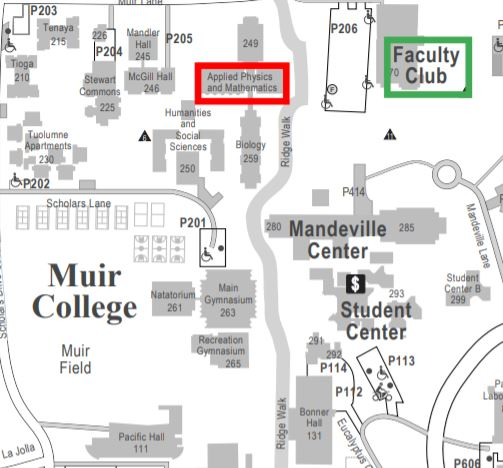
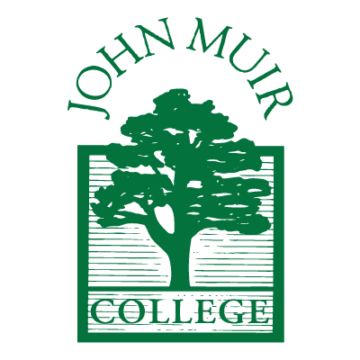

Muir
Celebrating the Independent Spirit
Inspired by John Muir's remarkable life, Muir College stresses the spirit of
individual choice and responsibility within the framework of a strong and supportive community.
It encourages awareness of environmental issues and involvement in environmental preservation
and sustainability both on and off campus.
Enrollment(2020): 5,347 - 16.8% of total enrollment

There are a total of 4 general education requirements for Muir College: Muir Writing,
Math or Natural Sciences, Social Sciences, and Fine Arts, Humanities, or a Language other than English.
Muir Writing
Muir College Writing Program (2 courses, 8 units)
Math or Natural Sciences
- MCWP 40
- MCWP 50
Must take 3 courses from one of the following themes. You CANNOT mix and
match themes (3 courses, 12 units)
Math and Statistics
Social Sciences
- CSE 4GS; COGS 14A, 14B; HDS 60; MATH 3C, 4C, 10A, 10B, 10C, 11, 18, 20A, 20B, 20C, 31AH, 31BH, 31CH; POLI 30/30D; PSYC 60, 70; SOCI 60
- COGS 3, 8, 9, 18; CSE 3, 5A, 8A, 8B, 11, 12; CSS 1, 2; ECE 15; LIGN 6, 17; MAE 5, 8; PHIL 10, 12
- ANTH 2 (or ANTH 102*), 43; BILD 1, 2, 3, 10, 12, 18, 20, 22, 26, 30, 32, 36, 38, 42, 44, 46, 60; COGS 17
- CHEM 4, 6A/6AH, 6B/6BH, 6C/6CH, 10, 11, 12, 13; ENVR 30, 105, 110, 120, 140, 142GS; PHYS 1A+AL, 1B + 1BL, 1C+CL, 2A, 2B, 2C, 4A, 4B, 4C, 5, 7, 8, 9, 10, 11, 12, 13; SIO 1, 3, 10, 10GS, 12, 15, 16, 20, 25, 30, 35, 40, 45, 45GS, 46GS
Must take 3 courses from one of the following themes. You CANNOT mix and match
themes (3 courses, 12 units)
Culture, Society and Social Justice
Fines Arts, Humanities, or a Language other than English (Must choose 2 of the 3)
- AAS 10; ANTH 1 (or ANTH 103*), ANTH 3 (or ANTH 101*), 21, 23, 105; CGS 2A, 2B, 105, 112 (or ETHN 127*); EDS 25; ETHN 1, 2, 3, 20; SOCI 1, 2, 10, 20, 30, 40, 50
- COMM 10; DSGN 1; LIGN 3, 4, 5, 7, 8 9GS, 101, 105, 108, 149GS, 175, 176, 177, 178; MGT 18
- COGS 1, 2, 10, 11; HDS 1; PSYC 1, 2, 3, 4, 6, 7
- ECON 1, 2, 3, 138; POLI 10/10D, 11/11D, 12/12D, 13/13D; USP 1, 2, 3, 5, 15, 25
Fine Arts (3 courses, 12 units): Choose from one fo the following options.
You cannot mix and match.
- MUS 1A, 1B, 1C
- MUS 2A, 2B, 2C
- MUS 4 | Choose 2 from MUS 5, 6, 7, 8, 9, 10, 11, 12, 13, 14, 15, 16, 17, or 18 (if taken for 4 units)
- MUS 126 | MUS 127 (taken twice for two different topics)
- TDGE 1 | Choose 2 from TDAC 1, TDDE 1, TDPW 1, or TDGE 3, 5, 10, or 11
- Choose 3 from TDHT 10, 21, 22 or 23
- VIS 11 | Choose two from VIS 1, 2, or 3
- Choose 3 from VIS 20, 21A, 21B, or 22
- VIS 22 | VIS 84 | VIS 151, 152D, 154, 156, 194S
- HILD 2A, 2B, 2C; (AP US history and IB History of the Americas units only apply to this sequence.)
- HILD 7A, 7B, 7C
- HILD 10, 11, 12
- Choose 3 from LTEN 21, 22, 23, 25, or 26
- LTEN 27, 28, 29
- LTWL 19A, 19B, 19C
- LTWR 8A, 8B, 8C
- Choose 3 from PHIL 1, 13, 14, or 15
- Choose 3 from PHIL 10, 12, 15, 25, or 32
- Choose 3 from PHIL 13, 26, 27, 28, or 33
- PHIL 31, 32, 33
- Choose 3 from GSS 21, 22, 23 or 25
- Choose 3 from CHIN 10A, 10B, 10C, 20A, 20B, 20C
- Choose 3 from JAPN 10A, 10B, 10C, 20A, 20B, 20C
- JWSP 1, 2, 3
- LIAB 1A+1AX, 1B+1BX, 1C+1CX
- Choose 3 from LIFR 1A+1AX, 1B+1BX, 1C+1CX, 1D+1DX; LTFR 2A, 2B, 2C, 50
- Choose 3 from LIGM 1A+1AX , 1B+1BX, 1C+1CX, 1D+1DX; LTGM 2A, 2B, 2C, 50
- Choose 3 from LIIT 1A+1AX , 1B+1BX, 1C+1CX, 1D+1DX; LTIT 2A, 2B, 2C, 50
- LIPO 1A+1AX, 1B+BX, 1C+1CX
- Choose 3 from LISL 1A+1AX, 1B+1BX, 1C+1CX, 1D+1DX
- Choose 3 from LISP 1A+1AX , 1B+1BX, 1C+1CX, 1D+1DX; LTSP 2A, 2B, 2C, 2D, 2E, 50
- LTGK 1, 2, 3
- Choose 3 from LTKO 1A, 1B, 1C, 2A, 2B, or 2C
- LTLA 1, 2, 3
- Choose 3 from LTRU 1A, 1B, 1C, 2A, 2B, or 2C
- 3 quarters of a heritage language
